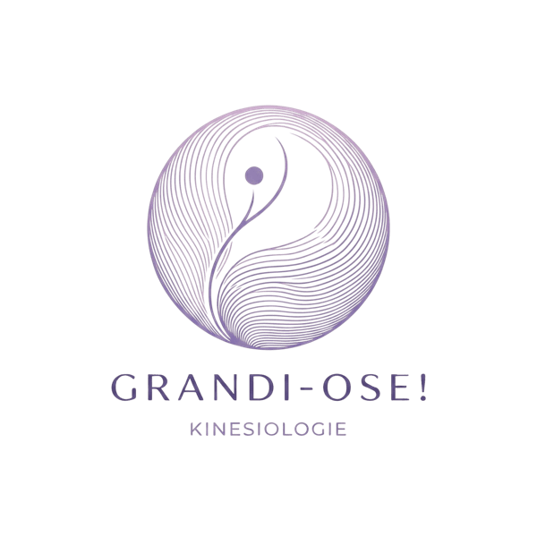

Des séances de kinésiologie à domicile ou sur rendez-vous, pour relâcher les tensions, retrouver de l'énergie et avancer plus léger·e dans son quotidien.

"Ça peut aller mieux. Vraiment."
La kinésiologie s'appuie sur le test musculaire pour identifier les tensions, les blocages émotionnels ou physiques, et accompagner le corps à retrouver son propre équilibre.
En séance, on prend le temps d'identifier ensemble ce qui a besoin d'être travaillé, puis on utilise le test musculaire pour dialoguer avec le corps et l'accompagner vers un mieux-être durable. Pas besoin de "croire" à quoi que ce soit : le corps parle, on l'écoute.
Quelques minutes pour poser ce qui vous amène, sans pression ni jugement.
Le test musculaire permet d'identifier ce qui a besoin d'être rééquilibré.
Des techniques douces accompagnent le corps vers un mieux-être qui s'installe.

Femme, épouse, maman, sœur, amie… et avant tout curieuse de l'humain et de ses infinies capacités d'évolution.
"Grandir n'a pas d'âge. Oser être soi demande parfois du courage."
Mon chemin vers la kinésiologie n'a rien d'une ligne droite. Comme beaucoup des personnes que j'accompagnerai, je n'ai pas toujours avancé sur un chemin tranquille : des troubles du comportement alimentaire à l'adolescence, des fausses couches plus tard, qui ont marqué mon parcours de femme. Sur le moment, ces épreuves sont douloureuses. Avec le recul, elles deviennent des invitations à mieux comprendre qui l'on est réellement.
Avant la kinésiologie, j'ai passé treize ans à accompagner des personnes en situation de handicap mental dans le cadre de vacances adaptées, entre Montpellier et Perpignan. Ces années ont profondément marqué ma façon de voir le monde : l'écoute véritable, l'adaptation, le respect du rythme de chacun, l'accueil de chaque personne telle qu'elle est.
Chaque être humain possède en lui des ressources immenses, même lorsqu'il les a momentanément oubliées.
Mon chemin m'a amenée à explorer différentes approches : les livres, précieux compagnons de route ; les constellations familiales, qui m'ont permis de regarder mon histoire avec davantage de douceur ; la kinésiologie, qui a ouvert des portes que je ne soupçonnais pas. Et puis il y a eu le silence — une rencontre inattendue pour celle qui aime parler, échanger, rire et partager. J'y ai découvert un espace incroyable d'écoute, de recul et de reconnexion : la possibilité d'entendre ce qui se passe réellement à l'intérieur de soi.
Je ne crois pas aux solutions miracles. Je crois à la puissance de l'écoute, à l'importance d'être accueilli sans jugement, aux petits pas qui, mis bout à bout, créent de grands changements. Je crois que chacun possède déjà en lui une grande partie des ressources dont il a besoin — parfois, il suffit simplement d'un espace bienveillant pour les retrouver.
Parce que grandir n'a pas d'âge. Parce qu'oser être soi demande parfois du courage. Parce que derrière nos peurs, nos blocages ou nos doutes se cache souvent une version de nous-même qui ne demande qu'à s'exprimer. Grandi-ose !, c'est une invitation : l'invitation à te rencontrer, à te découvrir autrement et à oser avancer vers toi-même.
On vient en kinésiologie pour souffler, se recentrer, ou mieux comprendre ce que l'on traverse. Voici les motifs les plus fréquents.
Pour relâcher la pression du quotidien, retrouver du sommeil et de l'énergie.
Deuil, séparation, reconversion, parentalité : traverser les transitions plus sereinement.
Douleurs récurrentes, fatigue persistante : écouter ce que le corps essaie de dire.
Il n'y a pas de profil type. La kinésiologie s'adapte à la personne, à son âge et à son rythme.
Sommeil agité, angoisses, difficultés à l'école, émotions qui débordent : des gestes doux, adaptés à leur âge et faits avec les parents.
Charge mentale, fatigue qui s'installe, transitions professionnelles ou personnelles : retrouver de la clarté et de l'élan.
Adolescents, seniors, en couple ou en famille : la kinésiologie ne demande ni condition ni croyance. Personne n'en est exclu.
Chaque parcours est singulier. Voici quelques retours de séance.
Encore en formation à Perpignan, je propose ma première séance gratuite, avec un suivi personnalisé à la suite. L'occasion idéale de découvrir la kinésiologie, sans engagement.
Je prends rendez-vousÀ domicile ou dans un espace dédié, sur rendez-vous, à Thuir et ses environs.